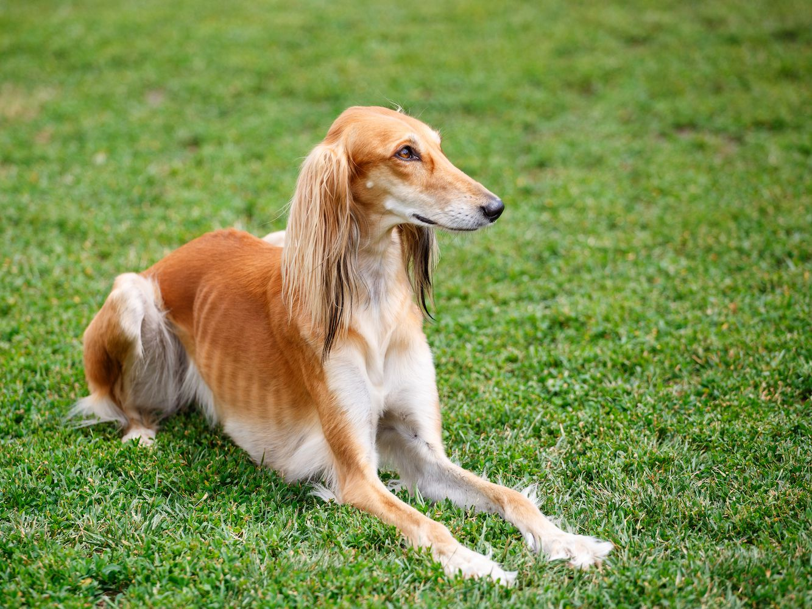
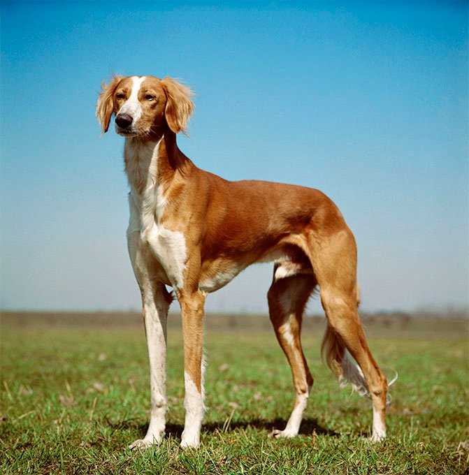
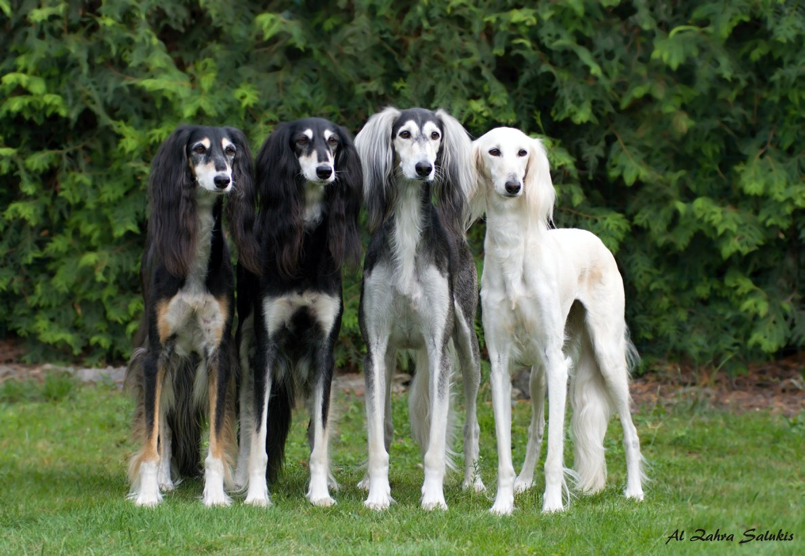

Tõu ajalugu
Maailma ühe vanima koeratõuna mainitud saluki on küllaltki väikesearvuline, kuid aastatuhandeid muutumatuna säilinud tõug. Juba 6000. aastal e.m.a. kujutati piltidel jooksvaid koeri, keda arvatakse olevat salukid. 3000-2000 a. e.m.a. on joonistel selgesti tuntavad salukid või nende lähisugulased slougid.
Salukid levisid Edela-Aasias ja Põhja-Aafrikas nii jahi- kui kodukoertena. Säilinud on Egiptuse gravüüre salukidest jahiretkel.
Beduiinide koer saluki oli Allahi kingitus. Beduiin võis elada ilma naiseta ja pereta, kuid mitte ilma salukita. Salukit peeti täiuslikuks – oli ta ju Allahi koer. Puhtad valged koerad olid eriliselt kiidetud ja ülistatud. Valged märgid kaelal olid beduiinide arvates kiiruse märk. Saluki kui jahikoera peamised saakloomad olid gasellid ja jänesed, seepärast kutsutakse neid ka gasellikoeraks. Salukid kaitsesid ka karavane röövretkede eest.
Erinevates piirkondades olid salukid erinevad. Pärsia salukid olid suuremad ja raskemad, neil oli tihedam karvastik ning neid kutsuti tazideks. Süüria salukid olid kas üleni valged või heledatoonilised. Yamani-Omani tüüpi koerad olid vähese karvaga või hoopis siledakarvalised.
Euroopassa toodi saluki 1100 aastat tagasi kaupmeeste poolt ja keskaja lõpuks olid nad levinud kogu Ida-Euroopas. Eestis on salukisid väga vähe, kuid ometi on siin olnud 4 pesakonda kutsikaid, kelledest kõik pole kahjuks Eestisse jäänud. Eestis elab 2002. aasta seisuga umbes 15 koera.
Tõu iseloomustus
Maailma ühe vanima koeratõuna mainitud saluki on küllaltki väikesearvuline, kuid aastatuhandeid muutumatuna säilinud tõug. Juba 6000. aastal e.m.a. kujutati piltidel jooksvaid koeri, keda arvatakse olevat salukid. 3000-2000 a. e.m.a. on joonistel selgesti tuntavad salukid või nende lähisugulased slougid.
Salukid levisid Edela-Aasias ja Põhja-Aafrikas nii jahi- kui kodukoertena. Säilinud on Egiptuse gravüüre salukidest jahiretkel.
Beduiinide koer saluki oli Allahi kingitus. Beduiin võis elada ilma naiseta ja pereta, kuid mitte ilma salukita. Salukit peeti täiuslikuks – oli ta ju Allahi koer. Puhtad valged koerad olid eriliselt kiidetud ja ülistatud. Valged märgid kaelal olid beduiinide arvates kiiruse märk. Saluki kui jahikoera peamised saakloomad olid gasellid ja jänesed, seepärast kutsutakse neid ka gasellikoeraks. Salukid kaitsesid ka karavane röövretkede eest.
Erinevates piirkondades olid salukid erinevad. Pärsia salukid olid suuremad ja raskemad, neil oli tihedam karvastik ning neid kutsuti tazideks. Süüria salukid olid kas üleni valged või heledatoonilised. Yamani-Omani tüüpi koerad olid vähese karvaga või hoopis siledakarvalised.
Euroopassa toodi saluki 1100 aastat tagasi kaupmeeste poolt ja keskaja lõpuks olid nad levinud kogu Ida-Euroopas. Eestis on salukisid väga vähe, kuid ometi on siin olnud 4 pesakonda kutsikaid, kelledest kõik pole kahjuks Eestisse jäänud. Eestis elab 2002. aasta seisuga umbes 15 koera.


Tõu standardid
Karv on pehme ja siidine. Siidine ilukarv on kehal lühike ning kõrvadel ja sabal pikk. Esineb ka lühikarvalist tüüpi salukit. Värvus on valge, kreem, pruunikas, kuldne, hall, hõbehall, grizzle, particolor või variandid nendest. Brindle värv on keelatud. Karvkatte hooldus on lihtne – piisab kergest harjamisest kord nädalas, et hoida karv korras.
Turja kõrgus isastel on 58,5–71 cm, emased on väiksemad. Pikakarvalisi ja lühikarvalisi koeri hinnatakse näitustel koos. Eestis on salukisid väga vähe, kuid ometi on siin olnud 4 pesakonda kutsikaid, kelledest kõik pole kahjuks Eestisse jäänud. Eestis elab 2002. aasta seisuga umbes 15 koera.